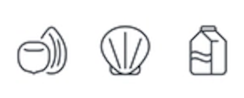

EatSift
Making it easier for all people to find yummy food
By helping you find restaurants nearby that you can eat at.

FIND SOME FOOD!
|  |
|
|
|---|---|---|
32 million Americans |
Every 3 minutes |
80% of Americans |
| are living with potentially life-threatening food allergies | a food allergy sends someone to the emergency room. | believe that restaurants need to improve transparency about their ingredients. |